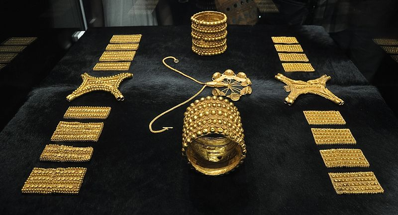
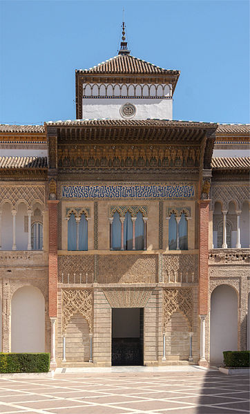

Los orígenes del núcleo original de la ciudad se encontraban en una especie de península situada en la margen
izquierda del Guadalquivir 73 74 El nombre original del asentamiento pudo haber
sido Hisbaal, alusivo a Baal, uno de los dioses más importante del panteón de la civilización
fenicia.75 Actualmente existe controversia entre los historiadores sobre si el lugar fue fundado por
los fenicios o por los onuvenses tartesios. Para los defensores de la tesis fenicia,
Tartessos no fue un pueblo
sino el mero nombre dado por las fuentes griegas a la región del sudoeste peninsular.
Las tropas romanas entraron en el 206 a. C., durante la segunda guerra púnica, bajo las órdenes del general Escipión el Africano y derrotaron a los cartagineses que habitaban y defendían la región. Escipión decidió fundar Itálica, lugar de origen del emperador romano Trajano, y quizá también de Adriano y Teodosio I el Grande, en la cercana Itálica (actual municipio de Santiponce).
Según el arzobispo visigodo san Isidoro de Sevilla, en el lugar que sería la actual ciudad de Sevilla, Julio César fundó la Colonia Iulia Romula Hispalis, latinizando el nombre del poblado indígena original de la ciudad (Ispal) en Hispalis, añadiéndole Julia por su propio nombre y Rómula por el de Roma, fórmula habitual en la toponimia de las colonias romanas. Según el historiador Antonio Caballos Rufino la colonia romana fue establecida por el procónsul Gayo Asinio Polión.76
A mediados del siglo I a. C., Híspalis tenía muralla y foro, con actividad mercantil portuaria, consolidándose su expansión urbanística y la definición funcional de sus sectores hacia mediados del siglo I d.C.77 Con la reorganización imperial, la joven urbe sería capital de uno de los cuatro conventus iuridici de la Baetica, provincia senatorial cuya capital era Corduba. En la zona en torno a la actual calle Mármoles se localizaba el foro de la época imperial romana,78 destacando especialmente en la ciudad altoimperial los sectores urbanos destinados a las actividades portuarias y comerciales79
El cristianismo llegó pronto a la ciudad y en el siglo III fueron martirizadas las hermanas santas Justa yRufina (unas de las actuales patronas la ciudad), según la leyenda, por no querer adorar a Astarté.
Durante el reino visigodo alojó en algunas ocasiones a la corte. En al-Ándalus, tras la invasión musulmana, fue primero sede de una cora y después capital de un reino de taifas, hasta llegar a convertirse en la capital del al-Ándalus almohade. En el año 844 fue saqueada por los vikingos que remontaron el río Guadalquivir, lo que provocó que el emir de Córdoba fortaleciese su sistema defensivo, pero en 859 los vikingos consiguieron entrar de nuevo.80
En 1248 se incorporó a la cristiana Corona de Castilla, al ser reconquistada bajo el reinado de Fernando III, quien fue el primero en ser enterrado en la catedral de Sevilla, en el año 1252. A partir de entonces Sevilla, repoblada por la aristocracia castellana, como capital del Reino de Sevilla fue una de las ciudades con voto en cortes y alojó la corte itinerante en numerosas ocasiones. Durante la Baja Edad Media la ciudad, su puerto y su activa colonia de mercaderes genoveses se situaron en una posición periférica pero importante en el comercio internacional europeo. En ese tiempo sufrió dramáticas convulsiones económicas, demográficas y sociales como la Peste Negra de 1348 o la revuelta antijudía de 1391.81
Tras el descubrimiento de América en 1492, Sevilla se convirtió en el centro económico del Imperio español. Los Reyes Católicos fundaron la Casa de Contratación, desde donde se dirigían y contrataban los viajes, controlaban las riquezas que entraban de América y, junto con la Universidad de Mercaderes, regulaban las relaciones con el Nuevo Mundo.82
Durante el siglo XVI la ciudad experimentó un gran desarrollo y transformación, que dio lugar a la construcción de algunos de los edificios más importantes del centro histórico.83 La ciudad llegó a ser un centro multicultural, lo que ayudaría al florecimiento de las artes, y a que desempeñase un papel importante en el Siglo de Oro español. Destacaron entonces las fábricas de jabón,84 la artesanía de la lana85 y de la seda,86 y la cerámica sevillana.87
Coincidiendo con su momento artístico más brillante, el Barroco, se vio afectada por la crisis del siglo XVII, lo que significó una decadencia económica y demográfica, al tiempo que la navegación por el Guadalquivir se dificultaba cada vez más, hasta que el monopolio comercial y sus instituciones se trasladaron a Cádiz. En esta época la ciudad padeció además otra gran epidemia de peste que mató a unas 60 000 personas, lo que por entonces constituía aproximadamente el 46 % de la población.88 A finales del siglo XVIII Sevilla perdió casi la mitad de su población.